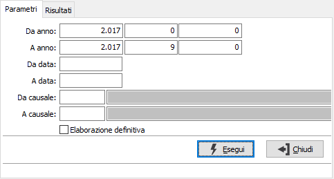
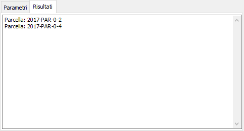

Annullamento contabilizzazione parcelle
La procedura consente di annullare la generazione dei movimenti contabili, cancellando i movimenti ed azzerando l'indicatore di generato movimenti sui documenti.
La finestra si articola su due pagine, una per i parametri ed una per i risultati.

DA ANNO: tre campi per contenere rispettivamente anno, serie sezionale e numero del documento da cui si vuole iniziare la selezione.
A ANNO: tre campi per contenere rispettivamente anno, serie sezionale e numero del documento con cui si vuole concludere la selezione.
DA DATA: data documento da cui si vuole iniziare la selezione. Confermando a vuoto, la selezione inizia dalla prima data valida.
A DATA: data documento con cui si vuole concludere la selezione. Confermando a vuoto, la selezione termina con l'ultima data valida.
DA CAUSALE: codice della causale documento da cui si vuole iniziare la selezione. Confermando a vuoto, la selezione inizia dalla prima causale valida. Sul campo sono attive le funzioni di ricerca (F9).
A CAUSALE: codice della causale documento con cui si vuole iniziare la selezione. Confermando a vuoto, la selezione termina all’ultima causale valida. Sul campo sono attive le funzioni di ricerca (F9).
ELABORAZIONE DEFINITIVA: definisce il tipo di elaborazione: provvisoria (casella vuota) oppure definitiva (casella con segno di spunta). L'elaborazione provvisoria può essere effettuata più volte e non aggiorna nessuna tabella; l'elaborazione definitiva aggiorna le tabelle.
La pressione del pulsante Esegui dà inizio all'elaborazione, al termine viene visualizzata la pagina dei risultati dove sono riportati i documenti modificati.
